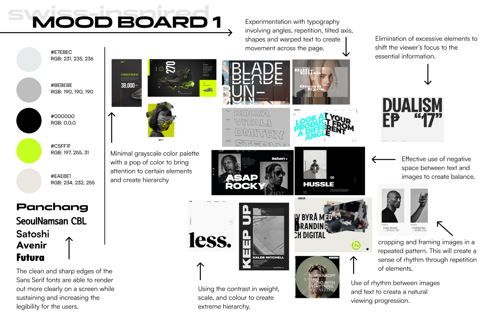
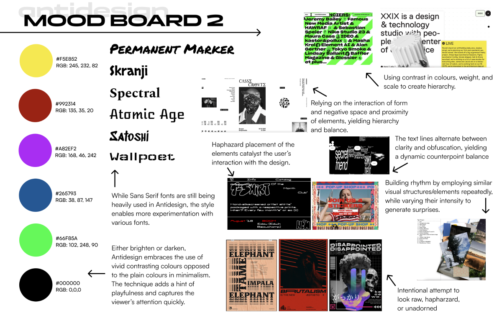
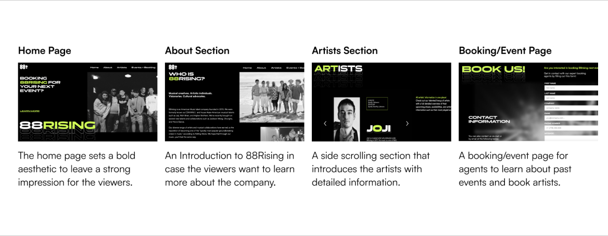
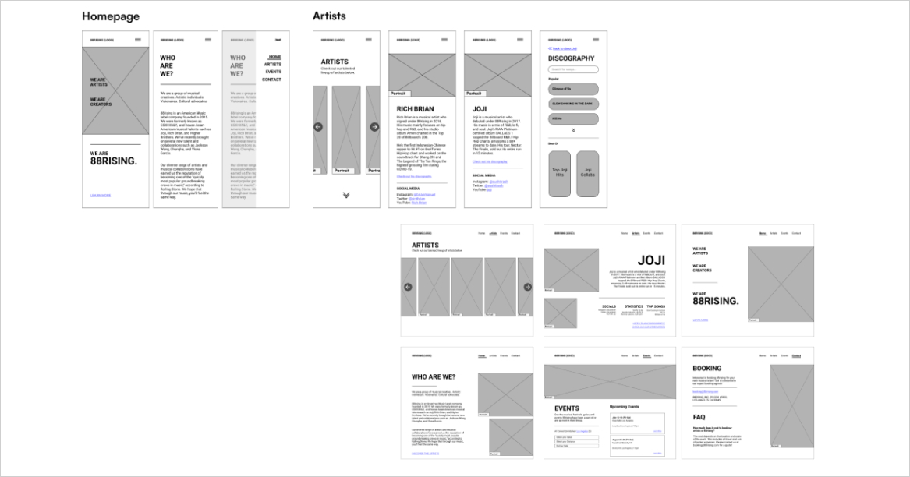
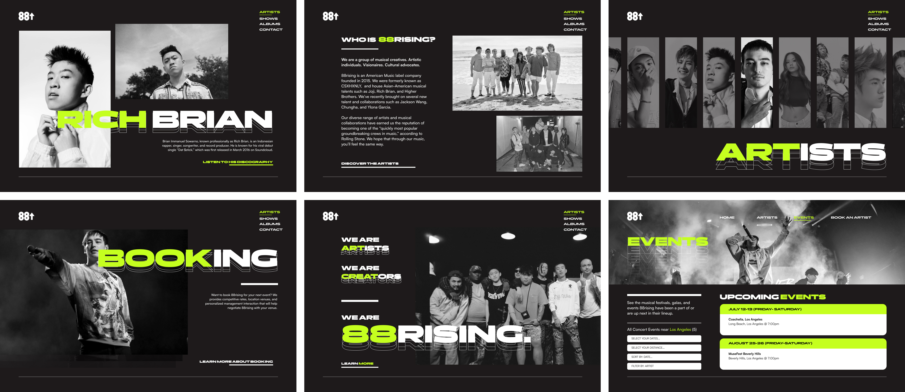

The five-week academic project was centred around streamlining the flow of the booking process of 88Rising artists for third-party booking agents. This all culminated in a microsite (desktop and mobile), which illustrated the team’s proposed solutions and insightful user experience choice. *This project is not affiliated with 88Rising. It is a case study done for an academic project.*
Contributions:
Content Design, User Research, UX Design, Prototype, Visual Design
Team:
Joseph Lee, Michelle Lee, Katelyn Tra, Yasamin Ketabchi
Duration:
Summer 2022, 5-Weeks Academic Project
With the freedom to pick any existing clients, our team chose 88Rising as our client after filtering all potential options. 88rising is an American music label founded in 2015. Formerly known as CSXHXNLY, the label primarily houses Asian-American musical talents such as Joji, Rich Brian, and Higher Brothers.
The musical booking agent role is incredibly challenging. It involves significant effort, time, organization and interaction. A normal day involves cold-calling artists, calling several venues to discuss scheduling for artists, and financial negotiations between multiple parties. While 88Rising does not have a clear booking procedure. The website’s primary focus is to streamline the booking process, using our microsite acting as the middle-man.
To contextualize the the user challenges of the proposed issue, a user persona was developed to better readily define the booking agents’ needs and wants. The diagram above visually encapsulates the demographic insights.
To explore potential art directions for the microsite, our team engaged in experimentation with two distinct mood boards. This approach allowed us to study diverse design decisions from other projects and create designs that align with the identified attributes.
Above: This mood board emphasizes the use of contrast in type and colour. It also incorporates ample whitespace and repetitive elements to establish a sense of balance in the overall design.
Above: To explore more options, I delved into an anti-design, which creates dynamics through the asymmetrical placement of elements, aiming for an unconventional visual impact.
Above: After seeking feedback from other peers, we refined the mood boards and ultimately picked the first art direction for its use of contrast.
Above: Based on the design attributes from the art direction, a member has explored the possible layout of the microsite. The images above are some iterations created by me.
With the goal of optimizing the user experience, we planned the user flow to minimize confusion and ensure that the microsite seamlessly meets the user's needs.
Low-Fidelity Wireframes to Brainstorm the Microsite
We used low-fidelity wireframes to plan the structure, flow, and micro-interactions of our microsite. Through an iterative process of reviewing and incorporating feedback, we made improvements to the wireframes.
Mid-Fidelity Wireframes to Communicate the Microsite
We utilized mid-fidelity wireframes to establish the interactions and navigation possibilities of our microsite. These wireframes provided a more detailed representation, allowing us to refine the user experience.
High-Fidelity Wireframes to Capture the Look of the Microsite
To showcase the solution and facilitate user testing, high-fidelity wireframes were created to accurately depict the user interface. These wireframes closely resemble the final visual design, providing a realistic representation of the microsite.
Utilizing Webflow, a teammate and I translated the design into a website, with my primary focus on the home, about, and booking pages. Despite the constraints of Webflow, which prevented a perfect replication of the Figma design, I dedicated efforts to troubleshooting any arising issues during the process. The aim was to demonstrate the prototype as closely as possible to the original design. In the end, our microsite and design process received high praise from the teaching team for its quality.
Given that none of the group members had prior experience with Webflow and it was not covered in class, my fellow website builder and I had to quickly learn the application within a week. Additionally, as we were working with the free version of Webflow, we encountered constraints such as limitations on the number of pages we could create and the implementation of advanced features using HTML/CSS.
Consequently, we had to make strategic decisions to prioritize and refine our ideas in order to effectively showcase our solutions within these limitations. If I could go back, I would try a different platform, such as Figma, to create the mockup microsite for a more satisfying result.
Collaboration and Teamwork
Upon reflection, I am satisfied with the successful collaboration of our team. From the ideation stage to the website construction, we evenly distributed the workload, fostering an environment where everyone's opinions and ideas were respectfully considered. Learning how to trust each other with their assigned role.